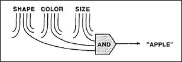
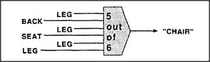

When we see an apple, how do we know it as an apple? How do we recognize a friend — or even know when we're seeing a person? How do we recognize things? The simplest way to recognize something is to verify that it has certain properties. To recognize an apple, in many circumstances, it might suffice to look for something that is red AND round AND apple-sized. In order to do that, we need a kind of agent that detects when all three conditions occur at once. The simplest form of this would be an agent that becomes active whenever all three of its inputs are active.

We can use AND-agents to do many kinds of recognition, but the idea also has serious limitations. If you tried to recognize a chair that way, you would usually fail, if you insisted on finding four legs AND a seat AND a back. You scarcely ever see four legs of a chair at the same time, since at least one leg is usually out of view. Besides, if someone's sitting in the chair, you often cannot see the seat at all. In real life, no recognition-scheme will always work if it's based on absolutely perfect evidence. A more judicious scheme would not demand that every feature of a chair be seen; instead, it would only weigh the evidence that a chair is present. For example, we could make a chair-agent that becomes active whenever five or more of our six chair features are in sight:
This scheme, too, will make mistakes. It will miss the chair if too many features are out of sight. It will mistake other objects for chairs if those features are present but in the wrong arrangement — for example, if all four legs are attached to the same side of a seat. Indeed, it usually won't suffice merely to verify that all the required parts are there — one also has to verify their dimensions and relationships; otherwise our recognizer would not distinguish a chair from a couch or even from a bunch of boards and sticks. Failure to verify relationships is the basis of a certain type of nonsense joke:
What has eight legs and flies? --- A string quartet on a foreign tour.